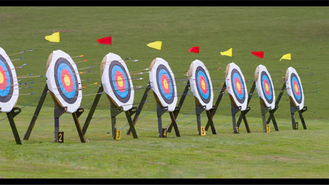
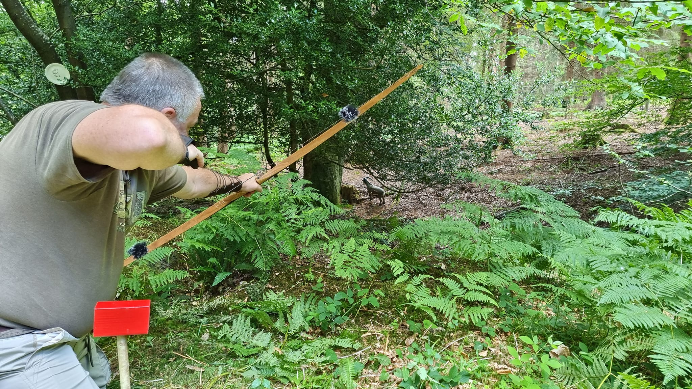

I have been married to my wife, Kim, since 1988. We have 2 grown up kids and 1 granddaughter
Kim and I discovered archery about 10 years ago and joined Chichester Bowmen. I ended up becoming chairman after a year at the club (I love a challenge!). We then discovered field archery and left to join Ratpack Field Archers after 4 years at Chichester Bowmen but not before I'd negotiated and seen through, the construction of a £150k new clubhouse.
Field archery has now become all consuming of our freetime. In conventional target archery arrows are shot at unobstructed, fixed-size roundel targets a known, fixed distance. Field archery mimics hunting in a woodland environment and in fact came to the UK from America in the 1970s when foam targets were developed to give archers practice when hunting was out of season.
3D foam targets of both animal and fantasy creatures are positioned at unknown distances in woodland so that they are partially hidden by trees and undergrowth requiring the archer to estimate both the distance and size of the target
It is important to stress that hunting with bows is illegal in the UK.
Equally, the vast majority of archers take up the sport are animal lovers and are passionate about the flora and fauna of the beautiful settings we shoot in.